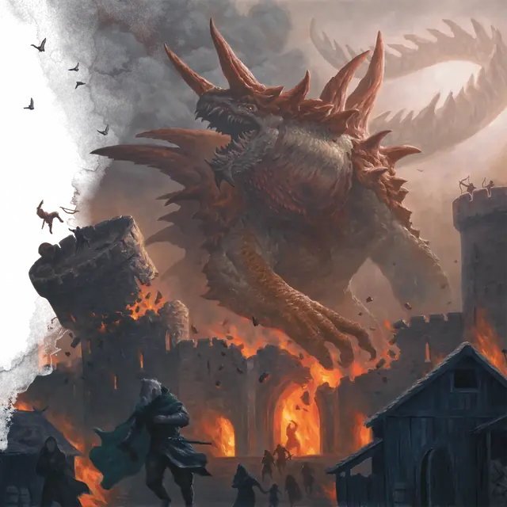

Тараск
Tarrasque
Громадное Чудовище (Титан), без мировоззрения

Класс Защиты 25 Инициатива +18 (28)
Хиты 697 (34к20 + 340)
Скорость 60 футов, Лазания 60 футов, Копания 40 футов
| мод | спас | ||
|---|---|---|---|
| СИЛ | 30 | +10 | +10 |
| ЛОВ | 11 | +0 | +9 |
| ТЕЛ | 30 | +10 | +10 |
| мод | спас | ||
|---|---|---|---|
| ИНТ | 3 | −4 | +5 |
| МДР | 11 | +0 | +9 |
| ХАР | 11 | +0 | +9 |
Сопротивление урону Дробящий, Колющий, Рубящий
Иммунитеты Огонь, Яд; Испуганный, Оглохший, Отравленный, Очарованный, Парализованный
Чувства пассивное Восприятие 19, Слепое зрение 120 футов
Языки нет
Опасность 30 (155 000 опыта; БВ +9)
Особенности
Легендарное сопротивление (6/день). Если тараск проваливает спасбросок, он вместо этого может в нём преуспеть.
Сопротивление магии. Тараск совершает с Преимуществом спасброски от заклинаний и прочих магических эффектов.
Отражающий панцирь. Если тараск становится целью заклинания Волшебная стрела или заклинания, требующего броска дальнобойной атаки, бросьте к6. При результате от «1» до «5» тараск не попадает под эффект заклинания. При результате «6» тараск не попадает под эффект заклинания, а заклинание отражается; при этом сам заклинатель становится целью заклинания.
Осадное чудовище. Тараск наносит двойной урон предметам и постройкам.
Действия
Мультиатака. Тараск совершает одну атаку Укусом и ещё три атаки Когтями или Хвостом в любой комбинации.
Укус. Бросок рукопашной атаки: +19, досягаемость 15 фт. Попадание: 36 (4к12 + 10) Колющего урона, и цель Схвачена (Сл освобождения от захвата 20); пока длится захват, она также Опутана и не может телепортироваться.
Когти. Бросок рукопашной атаки: +19, досягаемость 15 фт. Попадание: 28 (4к8 + 10) Рубящего урона.
Хвост. Бросок рукопашной атаки: +19, досягаемость 30 фт. Попадание: 23 (3к8 + 10) Дробящего урона. Если цель — существо Огромного размера или меньше, она Опрокидывается.
Громовой рёв (Перезарядка 5–6). Спасбросок Телосложения: Сл 27, каждое существо и каждый объект, который никто не несёт и не носит, в 150-футовом Конусе. Провал: 78 (12к12) урона Звуком, и цель Оглушена и Испугана до конца своего следующего хода. Успех: Только половина урона.
Бонусные действия
Проглатывание. Спасбросок Силы: Сл 27, одно Схваченное тараском существо Большого размера или меньше (тараск может держать проглоченными до шести существ одновременно). Провал: Цель становится проглоченной тараском, а состояние Схваченный оканчивается. Проглоченное существо Ослеплено, Опутано и не может телепортироваться, а также имеет Полное укрытие от атак и прочих эффектов, исходящих снаружи тараска; кроме того, оно получает 56 (16к6) урона Кислотой в начале каждого хода тараска.
Если тараск получает за один ход не менее 60 урона от проглоченного существа, в конце этого хода он должен совершить спасбросок Телосложения Сл 20; при провале он отрыгнёт всех проглоченных существ, которые падают Опрокинутыми в пространстве в пределах 10 футов от тараска. Если тараск умирает, проглоченное существо теряет состояние Опутанный и может освободиться из трупа, потратив 20 футов перемещения и оказываясь на выходе Опрокинутым.
Легендарные действия
У этого существа есть 3 использования Легендарных действий; оно может немедленно после окончания хода другого существа потратить одно использование, чтобы совершить одно из следующих действий. Существо восполняет все потраченные использования в начале каждого своего хода.
Натиск. Тараск перемещается на расстояние вплоть до половины своей Скорости и совершает одну атаку Хвостом или Когтями.
Сотрясающая поступь. Тараск перемещается на расстояние вплоть до своей Скорости. В конце этого перемещения тараск создаёт ударную волну, мгновенно исходящую от него 60-футовой Эманацией. Каждое существо в этой области теряет Концентрацию и, если оно Среднего размера или меньше, Опрокидывается. Тараск не может совершить это действие повторно до начала своего следующего хода.
Бонус мастерства +9
Среда обитания Город
Сокровища Отсутствуют
Тараск
Воплощение бедствий
Одно из самых разрушительных существ во всём мироздании, тараск — это машина катастроф и губитель народов. Ужас колоссальных размеров и невероятной мощи, это первобытное разрушительное существо сохранилось с древнейших эпох Материального плана, когда оно служило оружием бессмертных сил. С тех пор тараск тайно дремлет, пробуждаясь раз в несколько эпох, чтобы возвестить эру разрушения.
Тараск — двуногое доисторическое Чудовище ростом более семидесяти футов. Усеянный рогами и шипами, его колючий панцирь отражает урон и может отклонять магические атаки.
Ярость тараска никогда не угасает. Он набрасывается на любое существо, привлёкшее его внимание, разя когтями и могучим хвостом, а более мелких существ заглатывает целиком. Кажется, творения низших существ инстинктивно оскорбляют тараска, и он изливает свою ярость на здания, мосты, корабли и памятники. Чем крупнее сооружение или враг, тем сильнее гнев тараска.
Что — если вообще что-то — успокаивает тараска, остаётся загадкой, но в конце концов он возвращается ко сну, оставляя мир необратимо изменившимся. Хотя тараска можно остановить невероятным сопротивлением, его угроза никогда не исчезнет из мультивселенной. Всякий раз, когда одного тараска побеждают, где-то в другом месте на Материальном плане пробуждается другой.
Мало что переживает буйство тараска, а рассказы о его разрушениях часто противоречивы, неполны или не укладываются в голове. Если он не оставляет выживших, его бесчинства поначалу могут приписывать злым драконам или магическим катастрофам, но часто тараск оставляет за себой неопровержимые свидетельства своего пребывания. Совершите бросок по таблице «Свидетельства тараска» для вдохновения или определите сами, что чудовище оставило по пути.
Свидетельства тараска
| к4 | Среди разрушений тараск оставляет… |
| 1 | Следы магического заклинания, отражённого обратно в заклинателя. |
| 2 | Огромные следы или отметины когтей. |
| 3 | Рыжевато-коричневую чешую размером с рыцарский щит. |
| 4 | Разрушенную гору или реку, изменившую русло. |